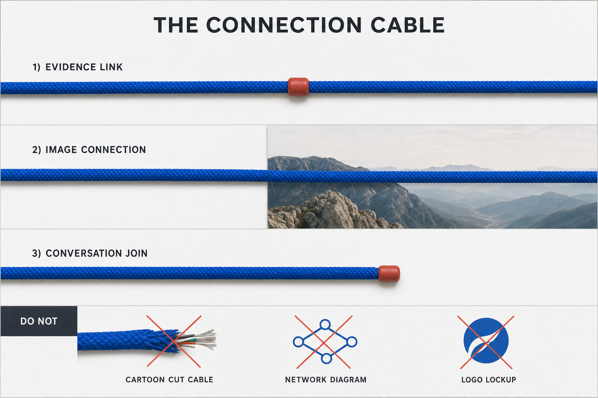

Section B
Brand Signature
Use The Connection Cable to keep systems visibly linked.
01
Master
One continuous cable keeps systems on speaking terms.

02
Usage
- One cobalt braided cable path per composition
- Small coral connector points at joins only
- The cable may cross one image boundary
- Never treat the cable as a logo, cartoon, or network diagram